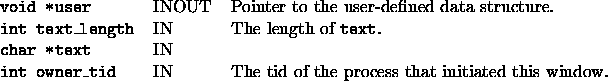

Back to SYMPHONY Home Page
Back to SYMPHONY Home Page
Next: Parameter file
Up: User-written functions of the
Previous: user_dg_free_window
void user_interpret_text(void *user, int text_length,
char *text, int owner_tid)
- Description:
-
The user can interpret text input from the window.
- Arguments:
-

- Return values:
-

Ted Ralphs
Thu Jun 8 12:44:45 CDT 2000